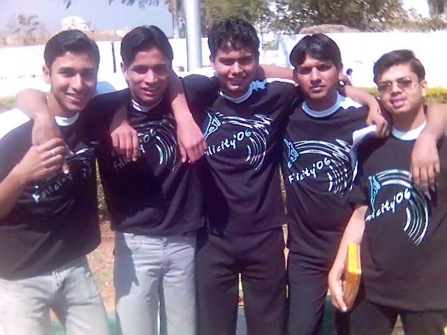
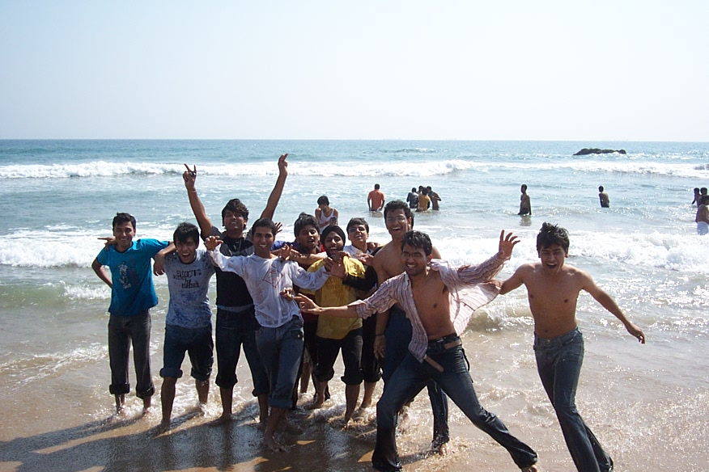
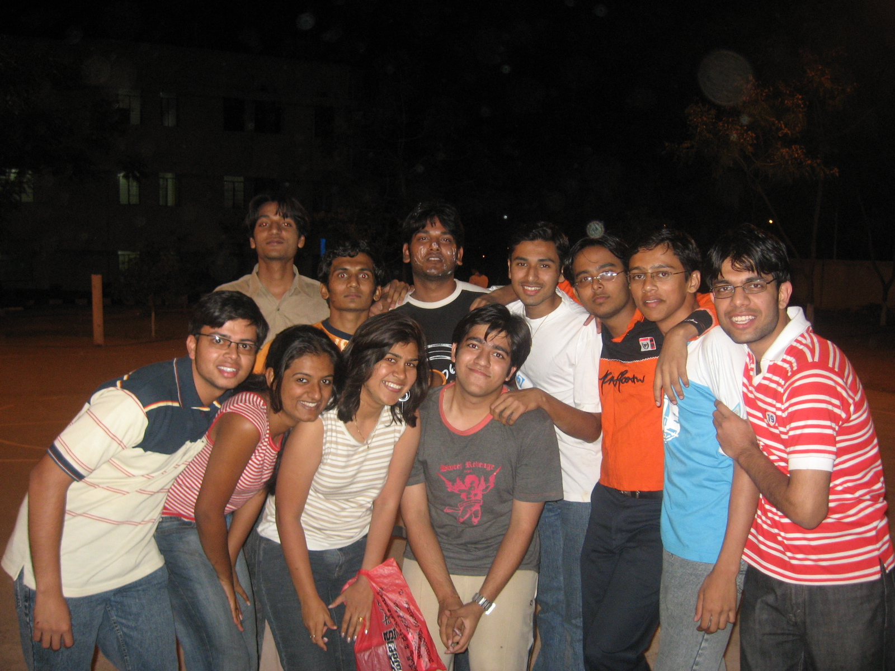

The Yearbook - Commemorating 2005-09!
Akash Agrawal's profile information
Name - Akash AgrawalBirthday - 1 March 1986
Email - akash.mail1986@gmail.com
Address - 2A, Chandra Lok Colony, Krishna Nagar, Mathura
Phone - 9885939890
Hobbies - TT,Computer Games, Photography
Testimonials written by Akash Agrawal
Akash Agrawal's Album

.jpg){kind=link}
Felicity Fever ...

{kind=link}
Sagar Kinare ...

{kind=link}
BB Court par bdays ...
Testimonials
Abhinav Parashar wrote-Akash ... Mast banda hai ....Always saw a smile on his face. Intelligent and helping. A true fun loving guy.
Yearbook band ho rahi hai ...islie short me likh rha hu ...
 .. Wish u a bright future . Touch me rahio bhai.
.. Wish u a bright future . Touch me rahio bhai. 
Deepti wrote-
Akash is one of those studs of EC, something which never got into my head.The first time I spoke to him was we having such a bad fate to get the deadliest panel anybody can ever think of - pjn, jayanthi and Kamal. We used to share our woes, ek doosre ki kitni watt lagti hai advisor ke haaton mein, etc.
Then we worked in Philips together and thats when I got to know more about him. Me being, hmm.. a moderate talker
 , I used to narrate such stories every day about such arbit stuff. It was like during lunch, he used to say, aur kya chal raha hai tere roomie ke saath? and bang, I kept going on and on, jumping from one topic to the other, going on and on and on.. But I even gave you chance to talk beech beech mein , dint I? I used to tease him with literally every freaking lady who passed our way during our lunch, we used to make fun of our project manager etc etc.
, I used to narrate such stories every day about such arbit stuff. It was like during lunch, he used to say, aur kya chal raha hai tere roomie ke saath? and bang, I kept going on and on, jumping from one topic to the other, going on and on and on.. But I even gave you chance to talk beech beech mein , dint I? I used to tease him with literally every freaking lady who passed our way during our lunch, we used to make fun of our project manager etc etc.
I wish you truck loads of good luck. Stay in touch
Prashasti Gupta wrote-
I used to talk to him in first year...workspace rocks
....The most fond memory of him is he used bring pade from his home town and they were delicious...simply awesome
Last three years we have had casual greetings only ...
All the best ..wishing you lots of luck
Abhishek Sainani wrote-
Phodu banda hai. ECE ka hoke has phodu coding skills. Used to debug my C codes in 1st semester.
I wonder why he didn't convert to CSE.
He's totally cool and confident about things. He uses logic really well.
He likes to have fun, I still remember during our batch trip while traveling from Hyd to Vizag, among others he was singing songs but I could feel that passion, that pleasure in his voice.
Seriously an awesome guy!
What I would like to take from him is his cool confident attitude...
All the best for future, I'm sure it'd be much better, although not the same as these college days!
Maruti Borker wrote-
my wing mate in first year
... and now a bengaluru-mate ...
he is a typical mathura guy ( banyan daalke ghoomta hai hostel mein
) We had some really good moments in first year holi/ragging etc..
Keep in touch and warm wishes for ur future
Richeek wrote-
I can never forget my days of GRE. I used to be very tense at that period due to too much of workload. I had my GRE in October and when the college starts in August, he came back from Bangalore completing his intern. He used to come to my room innocently search for Barrons and used to ask words non stop. The only respite I had that he had given me the exemptions of selecting word lists I want to give tests from
 !!!
!!!
Really his support in those days was commendable. I had my center in Bangalore, he asked me if he should go with me and I said that it would be comforting for me if he could go. We went there(in sleeper, although he had a pass but I did not want to spent money on AC). Those were the tough times and I will never forget what you did for me in those days.
All the best.
Atul Dwivedi wrote-
Aakash and me both share very good friend ship ... we both were in GHEB.. I used to go to his room and talk alot .. khaane peene ke liye bhi jaate rahta tha...!!
Banda ...simple hai.. and down to earth type ka hai...bahut hi friendly kisam ka hai ...sensible and sincere hai... poora heera hai ...cool type ka hai...apan dono ne bahut jaare jokes share kiye hai..though baad mein alag alag rahne ki wajah se baate kam ho gayi ...lekin ...kabhi bhi milte hai ..to mast baate karte hai ...
Ab baat hai ye ki hamara ek baar khurana ke sath club gaye the koi to kata tha ..
 ...usko marte hai be
...usko marte hai be
SCT mein isne hamein padhaya thanks bro
Kabhi bhi kuch khaane ko aata hai khilata rahta hai...
proper socialized banda hai.sophisticated hai... and hard working bhi hai...intelligent and smart too aur kya chahiye
Programming mein starting se hi bond tha.. apan dono NFS bahut khele hai starting starting mein ..ye .. maine tujhe kuch baar beat kiya hai ...
Richeek ka roomy tha..apan dono maje lete the iske ....!!
Bhai tu mast hai .. and aise hi rah ...I hope ki u do better in your life ..
Bas enjoy
Aniket Sharma wrote-
Tags: ECE, Yuktahaar, GHEB, Hindi course, Mathura.
Aniket Sharma wrote-
Aakash, one of the ever-working ECE people in our batch.
We lived on the same floor in GHEB in the first year, and my very first few outings were with this group. How different those days were! He had known some programming since before, as far as I remember, but by any standards, he was a very sharp coder. I was sure that he will change his branch to CSE. That never happened but still during placements, he started acing all the CS companies' written exams right from day 2
 I'm happy for you that you have a nice job in a CS-related company now
I'm happy for you that you have a nice job in a CS-related company now
I knew him better only in the 4th year, during the Hindi course, when we used to disagree with Laltu sir's ideology. Since then, we're eating in Yuktahaar together almost everyday. His resilience was on ample display during the placement season, when company after CSE company rejected him, apparently for being an ECE guy, when his strengths lay at CSE. That must have been one trying period, and could have been unnerving for anyone. Kudos to you for navigating through it so beautifully

A gentleman, hard-working and sincere, that's how I know him. Cheers to you and have a great life.
Memories: The awesome grading criteria in the Hindi Course in which we both got B-
Prateek G V wrote-
I always get a grin on my face when I hear his name (its called the DCH effect). Roll number 200530001 (#1), Btech ECE. Looks very very (... very ->infinity) innocent, but mind you looks are deceptive
. He is a total food freak. He is a total phodu saala when it comes to Coding. I wish he was in CSE, I am sure you would have reached heights easily. Any Felicity event which has Puzzles in it, Akash's name will always be found in the winners list. . He is too good at solving them - probably he should write a book on puzzles after having solved so many. Has kept us entertaining with the you-know-what he downloads. He gets lots of food stuff when he comes from home (I love Mathura ke peda). He is our group ka event manager. He plans the trip so well that he leaves no room for error.
One person who has been very proactive during the placements. Thanks for those tutorial sessions that you had conducted.

Karan wrote-
I haven't interacted much with Aakash, but of whatever little, it has been very cordial. In fact, hes that time of a guy- never gets agitated and is quite friendly. My first memories with him date back to the time when we were being ragged by the D-gang. In misery, we stuck it out
. After that, I remember discussing Jaws' assignments in the workspace, and most of the times, he had an elegant solution ready for the problem in question. His competency came to fore recently, during placements. We got interviewed for a lot of companies together, including Adobe, Citrix, Ivy. I was very happy when he finally got placed
I also remember doing Jeevan Vidya together. Kapil, he and I interacted a lot back then - it was a bit of a relief from some of those sessions. Overall, hes a guy with friendly demeanour and a positive outlook.
May God bless!
Fav memory: Jeevan Viday
Peace.
Vipul Mittal wrote-
My classroom neighbour in the first year, Akash is one of the most composed and descent guyz around. During class and assignment sessions, his coding skills always amazed me. I always wondered, how can someone with his skills got into EC and not into Comp Sci. I pity you for that
. He was always among those who used to finish the C assignments before time. His workspace system was among the best configured and I often used his to watch movies. We shared some nice time during the classes and I had a great time being his neighbour. After 1st year things changed and our interaction level went down but this never let me feel different about him.
I still look at him as one those persons whom I will remember for a long time be it for his coding skills, his friendly and helping nature, cheerful attitude, sincerity and dedication.
Good luck mate. May you reach great heights. God bless you
Subroto Sen wrote-
Akash aka aks ... hamare gang ka one of the cool banda. Bhai ismein jo puzzeles solve karne ka talent hai, mujhe aaj tak kisi mein nahi dikha
. C DS ka bond hai, placements mein isne aur maine bahut saare written nikale hai , but convert nahi kar paye  . Bhaisaab ko party dene mein koi hitchkichahat nahi hoti, jab bhi iski terat hoti hai, mein to khush ho jata hu, "yaar aaj to jam ke khaunga since akash poora finance karega"
. Bhaisaab ko party dene mein koi hitchkichahat nahi hoti, jab bhi iski terat hoti hai, mein to khush ho jata hu, "yaar aaj to jam ke khaunga since akash poora finance karega"  . Banda bolta thoda kam hai, jab bhi kisi ki fight ho rahi hoti hai, ye waha pe chup hi baithta hai, isne kabhi kuch nahi kahan ase mauke mein. Train mein kabhi 2nd class se niche nahi gaya ... Hamare batch ka Downloader bhi raha hai kabhi . Second year mein khuub CS khela hai humne iske room pe .. will miss those days ... Bangalore mein khoob masti karenge ... still a lot to say ... Dont change urself ... U have a bright future waiting for U .
. Banda bolta thoda kam hai, jab bhi kisi ki fight ho rahi hoti hai, ye waha pe chup hi baithta hai, isne kabhi kuch nahi kahan ase mauke mein. Train mein kabhi 2nd class se niche nahi gaya ... Hamare batch ka Downloader bhi raha hai kabhi . Second year mein khuub CS khela hai humne iske room pe .. will miss those days ... Bangalore mein khoob masti karenge ... still a lot to say ... Dont change urself ... U have a bright future waiting for U .Nitin Jain wrote-
Ye Aks and akash ke naame se jaane jaate hain..
Electronics items se inhe wishesh prem hain lekin jab inke electronic items ghoomne jaate hain
to unka sansaar se moh toot jaata hain
.
He is intelligent guy with strong logics
.C mein to bhai bond hain banda. I year mein C mein
isne naa jaane isne kitne logo ki programming karwai hain
. Sudoku bagerah isi ne sikhaya hain mujhe. He is my cache-in partner or briefly online events partner.
Ye one of the downloaders hai. 2 Pc workspace mein downloading par laga dete the, kuch esagu lab
mein baaki room se dwnload karte rehte the. I year mein inke PC mein 20 GB HD thi baaki PC's mein 4 Gb thi, to yahin sab dwnload karke sharing karte the, sabke paalan karta the .
Ye live games (TT,cricket,badminton,carrom,kabaddi etc.) kam khelte hain but saare time online games. Jab CZ khelte hain to generally inki count sabse jyaada hoti hai. Inhe computer mein naye-2 software download karne mein bada mazaa ata hain, Koi bhi naya ya purana software bagerah ki advice chaie ho to just aks ke room tak jao aur mil jaaegi.
Generally discussion se door rehna pasand karte hai. Inhe photo kheechne ka bada shauk lekin apni aur surrundings ki
.
Placement season mein to inke jeevan mein ek bandi aayi thi lekin hume bhabhi pasand nahi aai to
bas inhone bhi reject kar di
 .
.
Yobuddy ki most of the trip ke planner yahin hote hain aur ye mast shaanti se organize karta hain
.
Ab to sonus networks jaa rahe hain. Bangalore mein hi masti hogi..
Lekin hume bhoolna mat dost
. All the best for your future. Hope ki hum agle saal bhi Cache-in as a team khelenge .Himank Sharma wrote-
This guy is a sort of irony, he is arguably one of the best coders around, was definitely one of the best on our first year. He cleared the written tests of CS companies which most of us werent able to make sense of and Yet the irony is that he is in EC.
Definitely one of the sharpest brains around. Havent interacted much with him but whatever interaction I have had with him, he comes up as poised, a little sly smile on his face and the confidence to take on the world.
Here's hoping for a great future
Cheers!!
Sunil Soni wrote-
Akash - a very humble person .. he was the guy who helped me initially with my C programming assignments ... he has a very good grasping power ... and also he has lots of patience to explain the same solution again n again
.. and since then he has been the same way ...very charming, cool person ... very cool .. always be the way u r .. keep rocking dude ...Sachin wrote-
Akash, known him because of all the d/l he did for the IIIT community
Is a big fan of comics, I used to listen him and Ojasvi talking about all those PDFs he d/led and how there story are, I was so interested by that I end up reading few comics myself I still have few of them in my HDD.
During placement,I got to know how much talented he is. Though from ECE background ,he gave tough competition for everyone in CSE, pta nahin kitne saare written nikale the bande ne
^ and finally got into "SONUS" =>d
Final sem mein to LP ka jimma jaise issi le rakha hain, he teaches us during exam, does the assignment and proxy our attendance in class
.Great work dude
As you are placed in B'lore keep in touch.Wish you all the best for your future
Will Miss U for :- D/ling Things
Most Memorable moments : - Cricket in Felicity Ground
Msg for U: - Every weekend party in Bangalore
Aditya Singal wrote-
Yeh hamare college ke un chand logon mein se hain, jinka comics padhne ka shauk abhi tak barkaraar hai. Comics ki collection karna isne thode time pahle shuru kiya hai, lekin itni comics collect kar chuka hai ki comics ki ek digital library khol le
.
Padhai ke case mein yeh bhai sahab mera 'no tension' wala rule follow karte hain
. Last time tak ekdum cool rahega, aur phir kuchh hi ghanton mein padh kar number bhi mast le aata hai. Coding ka itna bada bond hai ki first year mein yeh na hota to aadhe log C, DS ki assignments ke time par apne baal noch-noch kar ganje ho chuke hote .
Aur computer aur softwares ke baare mein itni knowledge hai ki CSE wale bhi aakar doubts poochhte hain is se. Computer par koi kaam karna ho to Akash ke paas uske liye koi na koi software mil hi jaata hai.
Vaise to movies kam dekhta hai lekin X-Men ab tak kam se kam 50 baar to dekh hi chuka hoga. Aur agar ise koi nayi movie dekhni ho to Richeek ko bhi woh movie dekhni hi padti hai
.
Kaafi shaant type ka banda hai, aaj tak college mein isne kisi se ladai nahin ki hai. Haan kabhi kabhi agar gussa aata hai to chilla deta hai achanak se but that is it. Uske baad phir se normal ho jaata hai (most of the times
).
Aur photography se ise vishesh prem hai. Agar camera iske haath mein ho to kahin par bhi pics lena shuru kar deta hai. Aur ise sabse zyada shauk hai apni pics khinchwane ka, agar koi na mile to apni pics khud hi leta rahta hai
. Iski display pic bhi isne khud hi click ki huyi hai . Lekin bande mein talent to hai, pics achchhi leta hai .
Aur bahut si baatein hain, lekin baaki ke dost log woh already bata chuke hain
.
All the best for your future.
Shashank Agrawal wrote-
Wah agrawal ji...wah...
He is a perfectionist. Jis cheez mein man lage jaye, ekdum perfection tak karta hai. Bande ke saare item selected hote hain. Room hamesha chaka-chak, har cheez sahi jagah par. Inhe richeek bahut pasand hai. Dono room-mates ki ultimate bonding hai
Hamesha riceek ki utarta rehta hai
I came to know him the day our first C assignment was given. I wanted to complete it on the first day itself
but I wasn't sure about the last question. I felt no-one would have done all the questions. However, during dinner someone told me that th
ere is one guy who has done all. I was really surprised and wanted to meet him urgently. Our first meeting was on this day an
d I was immediately impressed
As time passed, more assignments came. We used to discuss a lot of questions. He is perhaps
the first person in IIIT I became fan of.
He is very sharp, can solve questions in few minutes on which you would bang your head for hours. Has a knack for solving puz
zles, sudoku, and other interesting stuff - faster than you could imagine
Also, has a great sense of humor and excellent timing. He likes trying out new things - new food items, new places. Is advent
urous and open to new ideas
Best wishes and lots of love
Shashank Agrawal wrote-
pic mein don lag rahein agrawal ji...thoda aaram se...
Yogendra Umesh Itankar wrote-
I call him Aks bhai. Cool person. Very brilliant and posseses exceptional logical skills. The one thing I like very much abt him is that he volunteers every time for arranging parties like getting cakes, drinks etc. Aur party ka hisab bhi yahi dekhte hain.
Richeek wrote-
I met this guy on my very first day at IIIT-H. I guess he did not understand my name the first time[
]. We were from neighboring places so we decided to share the room. First year was tough for me and cool for him. In those tough days of coding he was the only guy in the lab who used to debug my codes []. Although he was more generous to Adi but that is a different story.
He really loves to read [
]. His daily average was 5 pages per day during the days of first year. Reading work as sedative for him.
Though now i guess it has improved quite a bit. But the book is still the same "Harry Potter".
He is lazy but whatever he does marks his perfection. He is not from CSE but knows coding better than most of those guys. Loves to tweak with electronics gadgets, laptop, mobile anything that has a chip inside. He can solve any problem if it is related to your laptop or coding.
"Akash yar PDF main kaise convert karoon isse." Akash bolta hai ,"abe ye converter le le mere paas pada hai, chinese main kuch aata rahega click karta rahio. Install ho jayega
".
"Abe mujhe ye algorithm implement karni hai, do din se mara raha hoon, kaise karon?". Bhai bole, "Abe ek for loop laga, iske andar ek while
phir ek if condition, andar ek for then finally case lagakar break kar de!!!!". "Thanks akash, code hi de de
"
What I think he does not know his strengths. His logic is remarkable. He is too good in solving puzzles, too good in algorithms. Wherever he goes he will succeed.
Buddy, we will always be best friends.
Saurav Khurana wrote-
he is the silent downloader, fond of "new and exotic stuff"...is always updated and you can take his reviews whenever a new stuff is added on the lan...
he would come all the way from b'lore to refill his hardisk during summer vacations....
...he is fond of photography and especially clicking his own pics....ye jo pic isne apni profile main laga rakhi hai...woh iski khud ki khichi hui hai !!
Among the sports, he has varied interests...used to play badminton while in 2nd year and yeah cricket too
and of late plays good table tennis as well..
He is fond of fiddling with his laptop and would not rest his soul until he has done his bit of tweaking for the day...was almost on the verge of loosing his hard disk recently until pam pajji came to his rescue!!
During first year I found him as a cool headed guy with a touch of humbleness..was the only person who had 20GB of hard disk in the workspace while others struggled with 4 GB
...
he is one of the few persons whom I found being capable of handling responsibilities and having a practical bent of mind...few people can think rationally in pressure situations and still be able to take the right decisions...
...you have been a gr8 supporter all these years...and I cherish having a frnd like you...Kapil Bajaj wrote-
Well this guy shd be idolized by both ECE and CSE guys.
We used to live in the same hostel during the first two years. Though he specializes in electronix he was the most "Wanted Guy" during the C assignment submissions in the lab. We could hear "Akash-Akash" from all the corners of the lab as soon as he entered the lab. He used to help all the students even though he still had to submit his own questions. His knowledge in C impressed me a lot as he used to solve our doubts in seconds while we used to ponder over it for hours. I came to know him better during the Jeevan Vidya sessions. We were both Made to sit together and we both were equally excited abt the idea of Jeevan Vidya. While for most of our batch mates JV was a torture, it turned out pretty gud for me mostly because of this guy. We used to talk a lot during the sessions, and tried to argue with Bagadia sir without any reason. I still remember the long breaks we used to take and competition of who will bring more biscuits during those breaks. Well neither of us cud win as Mathur would beat us all. After Jv our BC sessions used to continue all the time, in classes ( we had very less no. of classes together we were in different sections  ) outside GHEB on the stairs or in his room. The best part of being with this guy is that we don't have to try, your time will pass like anything.
) outside GHEB on the stairs or in his room. The best part of being with this guy is that we don't have to try, your time will pass like anything.
Our interests also matches a lot, like both of us like movies and some other videos too which he used to dwn from net ( I hope you get it buddy
) . Special thanx for those videos . Both of us have a special craving for old songs.
Some things/moments I will always cherish abt you: Your way of doing Hisaab, Mathura ki sweets, our walks after exams ( as usually both of us did badly we were mostly complaining abt the questions ), our 5 mins study sessions before exams in which we used to revise the complete course
, our nfs underground competitions which I used to win all the time , your lab pc which I used all the time .
Keep Rocking Dude
Harsh wrote-
Akash is person who has perfect timing of doing things. Will be silent most of the time and only speak when the effect of it would be optimum.
Very intelligent though uses his skill very occasionally.
I fanatic for comics and games. I was literally shocked to see the list of comics which he had read (he maintains a XL sheet of the comics he has). A very good friend and a good cook too. Knows a lot when it comes to kitchen. Good for his future partner.